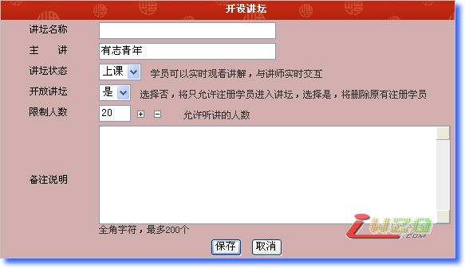
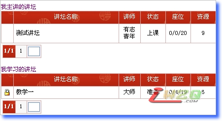

五子棋连珠大讲坛系统介绍
#1 <font color="red">五子棋连珠大讲坛系统介绍</font> 作者：有志青年 发表时间：2007-12-3 13:14:02
已经进入内测阶段！
为普及和推广五子棋，我站现搭建连珠大讲坛系统，五子高手可以在本系统中开设讲坛，进行在线实时教学，网站会员可以进行在线学习，实时收看讲师的讲解，并可与讲师进行实时交互操作。
要开设讲坛或加入讲坛学习，请先登录或注册。
本系统优点：
1、师生双方均不需要安装任何插件。
2、教师讲课时可以插图配合讲解。
3、学生可以参与交互过程。
4、基本实现无刷新，今天看了第一稿的内测，棋盘的刷新，绝对惹人喜欢！
5、可以同时开设多个教室！
6、可以设置内部教学，只有审核批准的才可进入对应教室听课！
7、每个讲坛有：准备、上课、下课、结束，四种状态！
8、作为在线直播绰绰有余
缺点：
不可能语音和视频！


教室内部情况，暂时不公布！相信，很快就会让大家共同测试了！
#2 Re:五子棋连珠大讲坛系统介绍 作者：17号蓝星仔 发表时间：2007-12-3 13:35:26
zhichi 有时间就来体验#3 Re:五子棋连珠大讲坛系统介绍 作者：许相公 发表时间：2007-12-4 10:08:12
支持有志斑竹，本人一定光顾
#4 Re:五子棋连珠大讲坛系统介绍 作者：gerbo 发表时间：2007-12-4 17:23:40
 网站的创新啊～！支持～！有时间一定过来学习．．
网站的创新啊～！支持～！有时间一定过来学习．．
#5 Re:五子棋连珠大讲坛系统介绍 作者：yidefei 发表时间：2007-12-5 20:19:16
强烈支持！！！#6 Re:五子棋连珠大讲坛系统介绍 作者：飞飞 发表时间：2007-12-8 22:30:53
太好了,支持一把!#7 Re:五子棋连珠大讲坛系统介绍 作者：天上掉个馅饼 发表时间：2007-12-19 13:56:44
一直关注爱五子棋